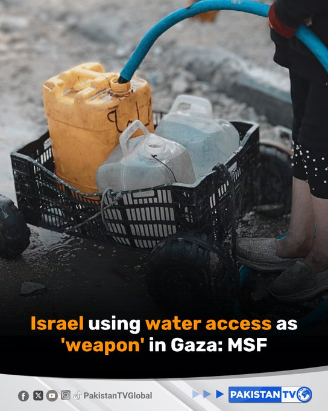
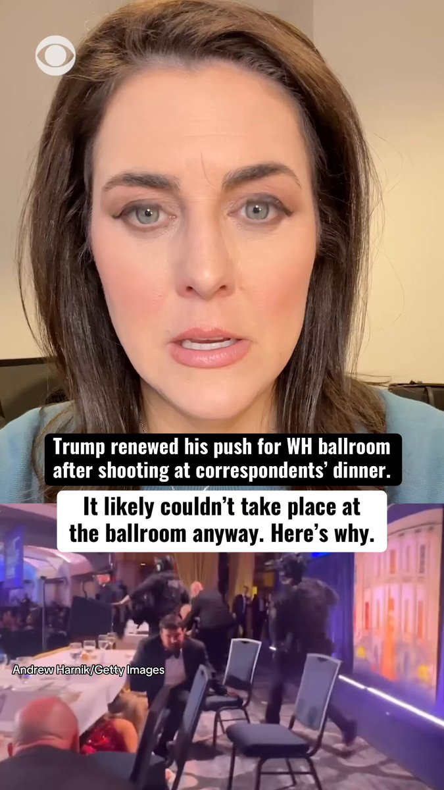
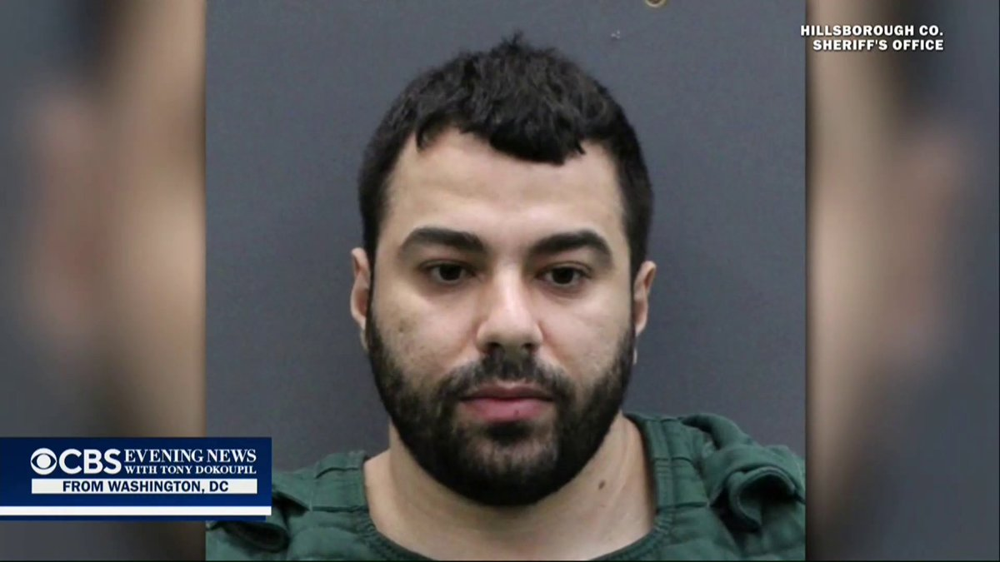
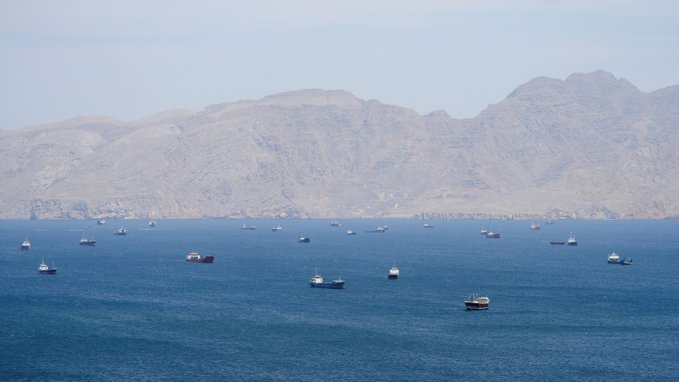
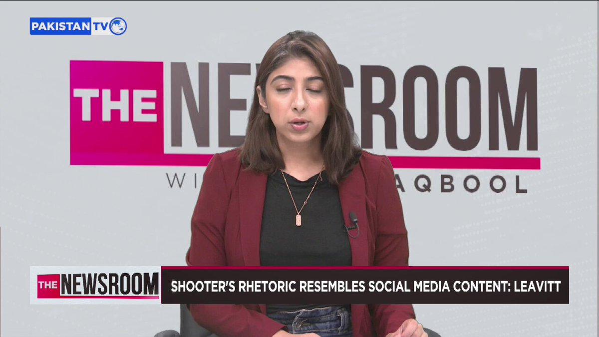
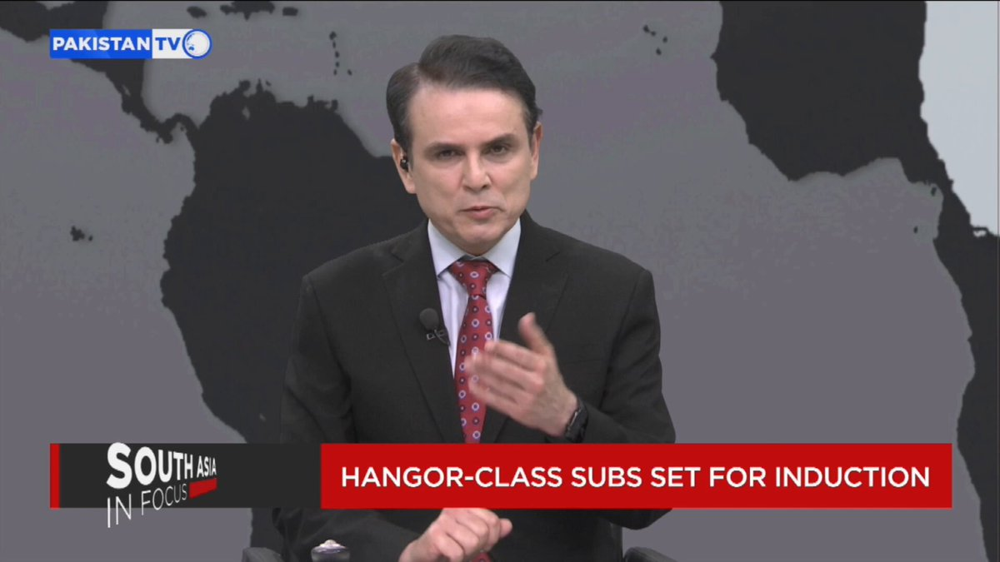
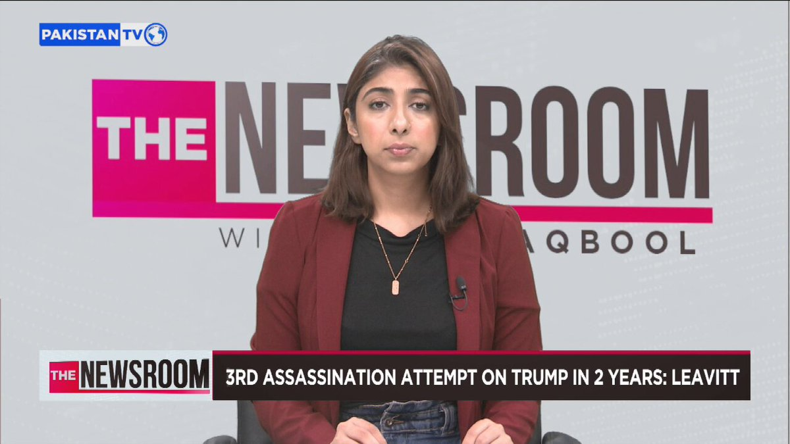
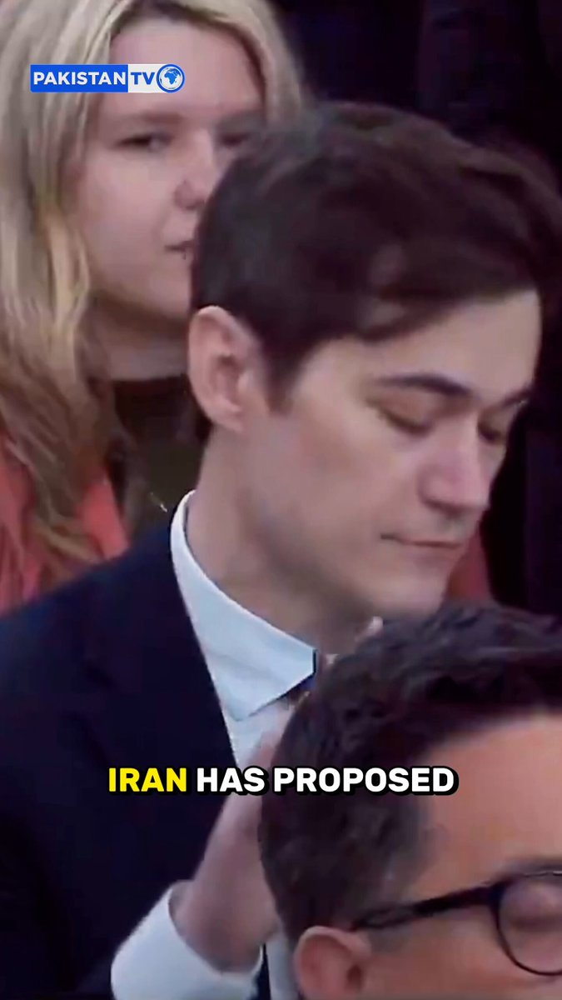

@CBSNews
📝 原文: Supreme Court turns away another parental rights dispute on gender-identity policies in schools
🇨🇳 译文: 最高法院驳回另一起关于学校性别认同政策的家长权利纠纷

🕒 2026-04-28T06:00:00+00:00
| 来源 | 旧窗口内数量 | 本次新增 | 本次淘汰 | 当前窗口内共有 |
|---|---|---|---|---|
| 推文 + Dawn 新闻 | 0 | 43 | 0 | 43 |
| ARY News | 0 | 0 | 0 | 0 |
注：淘汰数 = 旧窗口内数量 + 本次新增 - 当前窗口内共有

















暂无文章。